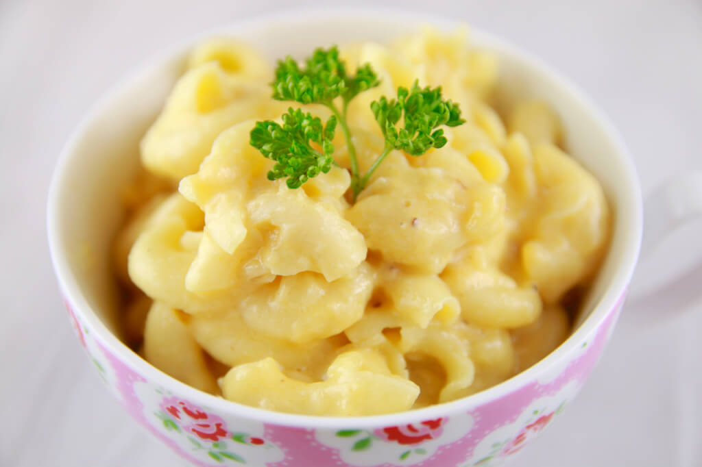

Mug Macaroni and Cheese
Time: 10 minutes
Cost: $10.00
Servings: 1

Ingredients
1/3 cup pasta
3/4 cup cold water
4 tablespoons milk
1/4 teaspoons cornstarch
4 tablespoons grated cheddar cheese
salt
pepper
Instructions
1. In a large microwavable mug or large bowl add in the macaroni and the water. You need a large mug as the water will boil up.
2. Microwave for roughly 3 ½ minutes. You want the pasta to be fully cooked.
3. Pour off the remaining cooking water.
4. Stir in the milk, cornstarch and shredded cheese and microwave for a final 60 seconds to create your sauce. Stir well, season with salt and pepper and enjoy.